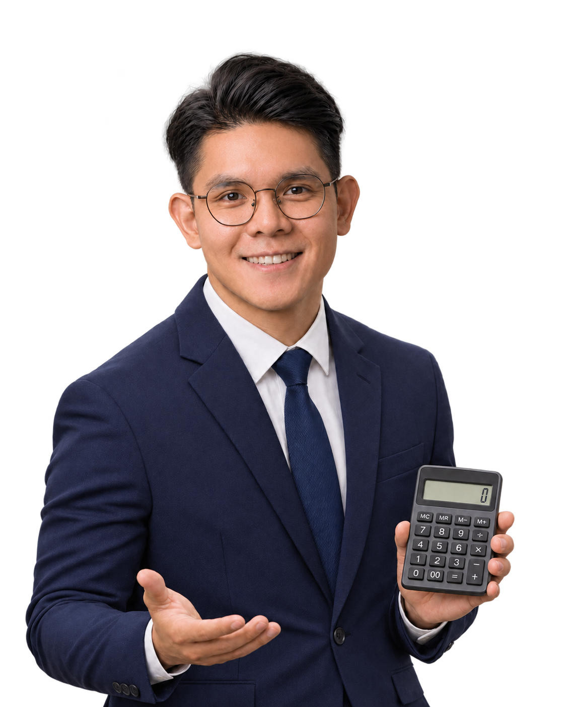

EPF 之外，
多一份退休准备。
PRS 是自愿参加的退休投资计划。除了 EPF，你也可以按退休目标，以及自己能接受的风险来选基金。
2026 个人税务减免指南
22 项 tax relief，边看边算。
可以扣税的，别漏掉。
马来西亚税务居民适用 · 2026 年支出 · 2027 年报税

我帮你算算01 / 省税，从算清楚开始
先填全年收入，再填可以扣税的开销。
不用自己按计算机，这里帮你算。
填全年的应税收入，包括薪水、bonus 等，不是月薪哦。免税收入不用算；做生意的先扣掉符合规定的生意开销。这里先不要扣个人 tax relief。
示例已载入：收入 RM90,000、EPF RM4,000、生活方式 RM2,500、PRS RM3,000。请改成你的实际资料。
金额须介于 RM0 与 RM1,000,000,000；范围外数值已按边界计算，请修正输入。
有花到、也符合条件的才填，其他留空就好。记得看每项和里面细项的上限。两项医疗减免加起来最多 RM10,000；EPF 和首间房屋贷款利息也各有上限。同一笔开销，夫妻之间或不同项目都不能重复 claim。
02 / 退休规划，多一点奖励
存进 PRS 的钱是拿来做退休投资的；符合条件，也可以用来 claim 当年的 tax relief。先看看能省多少、这笔钱可以放多久，再决定适不适合你。
PRS 是自愿参加的退休投资计划。除了 EPF，你也可以按退休目标，以及自己能接受的风险来选基金。
PRS 和递延年金（deferred annuity）加起来，一年最多 claim RM3,000，目前适用到 YA 2030。是从算税的收入里扣，不是直接退你 RM3,000。
先选适合自己的退休投资，再看平台的 promo code、要存多少钱，以及怎样才拿得到奖励。
PRS / 先看一个例子
Brian 和 Amy 一年都赚 RM80,000，
其他减免也一样是 RM20,000。
差别是：Brian 另外存 RM3,000 进 PRS。
BRIAN
AMY
RM3,000 是当年 PRS 供款；RM330 是税款差额，不是投资回酬。实际投资金额受费用影响。
估算按 2026 居民逐级税率及适用的个人 RM400 回扣计算；不含配偶回扣、zakat、其他抵免及 PCB 已扣税。结果不是预计退税金额，输入只在本页计算。
PRS / 再看你属于哪个税阶
这张表让你先看个大概：这里假设整笔 RM3,000 减免都落在同一个税阶，还没算低收入个人回扣。如果扣减免后跨到另一个税阶，就要分段算，实际省的金额会不同。
| 扣除 PRS 前 扣减免后算税的收入 (RM) | 所在税阶的税率 | 大概少缴的税 (RM) | 相当于 RM2 的小享受 |
|---|
比如整笔减免都落在 11% 税阶：RM3,000 × 11% = RM330，约等于 165 份 RM2 的小享受。
PRS 是投资，基金价格会起起落落，回酬没有保证，也有费用和提款限制。55 岁前，如果是一般用途提款，可能要付 8% 税罚；符合例外用途的，要另外看规定。了解 PPA 的 PRS 结构与提款规则 ↗
PRS / 规划好，下一步开户
先看清楚基金、费用和活动条件。
开户时，记得填对 promo code。
FSMOne
网页直接开户合资格 PRS 奖励 + 新用户奖励
RM40 + RM25
两项条件都符合，就有机会拿到 RM65
WELCOMEversa.
通过 App 开户合资格 PRS 奖励 + promo code 奖励
RM50 + RM10
两项条件都符合，就有机会拿到 RM60
VERSAMAD开户前记得看：谁可以参加、最少要存多少、几时截止、奖励几时发。填了 promo code，不代表一定拿到奖励哦。奖励、投资回酬和 tax relief 是分开算的。PRS 是长期退休投资，提前提款有条件。
03 / 官方资料
这里把减免分成 22 项，编号不是 e-Filing 的格子编号。
网页更新：2026 年 11 月 6 日。申报前核对适用规则。